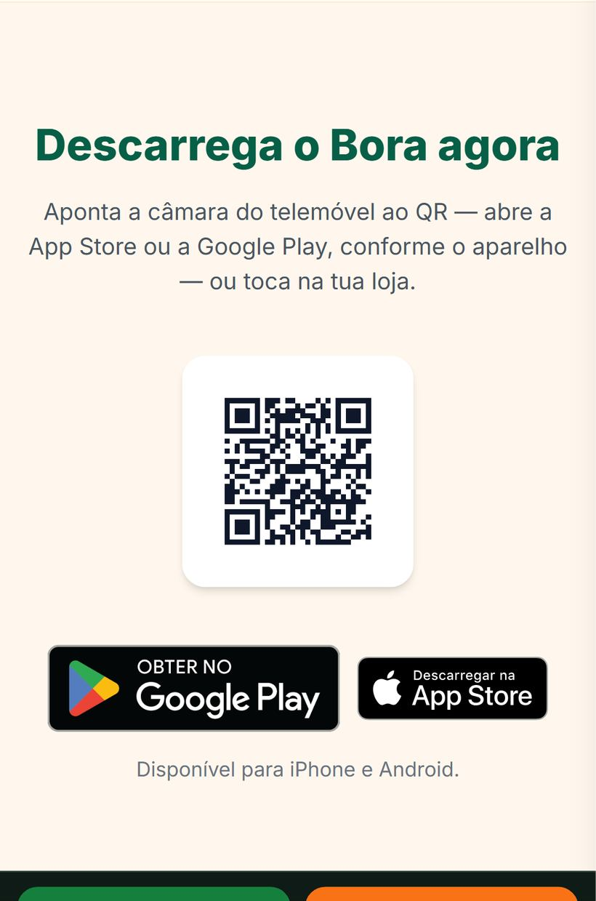
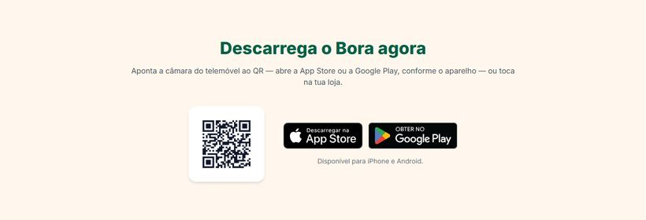

Botões de descarregar do site — provas de 15/10/2026
Endereço testado: https://boraguarda.com, depois de publicado. Em cada aparelho abriu-se a página inicial,
a de Entregas e a de Viagens, e carregou-se em cada botão de descarregar que se vê. Cliques testados com destino
certo: 31;
errados: 0.
No iPhone o destino lê-se pela cadeia de navegação: a página chega a apps.apple.com e o telemóvel abre a app
App Store (itms-appss), por isso a captura fica na página de onde se carregou. QR da página inicial lido por OpenCV:
https://boraguarda.com/baixar?de=qr-site (ficheiro no ar).
resultado.json com tudo.
iPhone 15
Bloco «Descarrega o Bora agora»: aparelho detectado ios; selos por ordem: App Store 60 px de altura, Google Play 44 px de altura. QR: assets/img/qr-baixar-site.png.
- inicio · «Descarregar grátis» → App Store (certo) · captura
https://www.boraguarda.com/baixar?de=site-inicio → https://apps.apple.com/pt/app/bora-entregas-e-servicos/id6809954739 → itms-appss://apps.apple.com/pt/app/bora-entregas-e-servicos/id6809954739
- inicio · «Descarregar a app» → App Store (certo) · captura
https://www.boraguarda.com/baixar?de=site-inicio → https://apps.apple.com/pt/app/bora-entregas-e-servicos/id6809954739 → itms-appss://apps.apple.com/pt/app/bora-entregas-e-servicos/id6809954739
- inicio · «Página de descarga do Bora» → App Store (certo) · captura
https://www.boraguarda.com/baixar?de=site-inicio → https://apps.apple.com/pt/app/bora-entregas-e-servicos/id6809954739 → itms-appss://apps.apple.com/pt/app/bora-entregas-e-servicos/id6809954739
- inicio · «Descarregar na App Store» → App Store (certo) · captura
https://apps.apple.com/pt/app/bora-entregas-e-servicos/id6809954739 → itms-appss://apps.apple.com/pt/app/bora-entregas-e-servicos/id6809954739
- inicio · Obter no Google Play: selo da outra loja — não testado
- inicio · «Descarregar a app iPhone e Android» → App Store (certo) · captura
https://www.boraguarda.com/baixar?de=site-inicio → https://apps.apple.com/pt/app/bora-entregas-e-servicos/id6809954739 → itms-appss://apps.apple.com/pt/app/bora-entregas-e-servicos/id6809954739
- entregas · «Instalar» → App Store (certo) · captura
https://www.boraguarda.com/baixar?de=site-entregas → https://apps.apple.com/pt/app/bora-entregas-e-servicos/id6809954739 → itms-appss://apps.apple.com/pt/app/bora-entregas-e-servicos/id6809954739
- entregas · «Instalar o Bora» → App Store (certo) · captura
https://www.boraguarda.com/baixar?de=site-entregas → https://apps.apple.com/pt/app/bora-entregas-e-servicos/id6809954739 → itms-appss://apps.apple.com/pt/app/bora-entregas-e-servicos/id6809954739
- viagens · «Instalar» → App Store (certo) · captura
https://www.boraguarda.com/baixar?de=site-viagens → https://apps.apple.com/pt/app/bora-entregas-e-servicos/id6809954739 → itms-appss://apps.apple.com/pt/app/bora-entregas-e-servicos/id6809954739
- viagens · «Instalar a app» → App Store (certo) · captura
https://www.boraguarda.com/baixar?de=site-viagens → https://apps.apple.com/pt/app/bora-entregas-e-servicos/id6809954739 → itms-appss://apps.apple.com/pt/app/bora-entregas-e-servicos/id6809954739
- viagens · «Instalar o Bora» → App Store (certo) · captura
https://www.boraguarda.com/baixar?de=site-viagens → https://apps.apple.com/pt/app/bora-entregas-e-servicos/id6809954739 → itms-appss://apps.apple.com/pt/app/bora-entregas-e-servicos/id6809954739
Pixel 7 (Android)
Bloco «Descarrega o Bora agora»: aparelho detectado android; selos por ordem: Google Play 60 px de altura, App Store 44 px de altura. QR: assets/img/qr-baixar-site.png.

- inicio · «Descarregar grátis» → Google Play (certo) · captura
https://www.boraguarda.com/baixar?de=site-inicio → https://play.google.com/store/apps/details?id=pt.boraapp.bora&referrer=utm_source%3Dsite-inicio%26utm_medium%3Dbora-redes%26utm_campaign%3Dguarda-2026-09 → intent://play.google.com/store/apps/details?id=pt.boraapp.bora&referrer=utm_source%3Dsite-inicio%26utm_medium%3Dbora-redes%26utm_campaign%3Dguarda-2026-09&pcampaignid=web_auto_redirect&web_logged_in=0&redirect_entry_point=dp
- inicio · «Descarregar a app» → Google Play (certo) · captura
https://www.boraguarda.com/baixar?de=site-inicio → https://play.google.com/store/apps/details?id=pt.boraapp.bora&referrer=utm_source%3Dsite-inicio%26utm_medium%3Dbora-redes%26utm_campaign%3Dguarda-2026-09 → intent://play.google.com/store/apps/details?id=pt.boraapp.bora&referrer=utm_source%3Dsite-inicio%26utm_medium%3Dbora-redes%26utm_campaign%3Dguarda-2026-09&pcampaignid=web_auto_redirect&web_logged_in=0&redirect_entry_point=dp
- inicio · «Página de descarga do Bora» → Google Play (certo) · captura
https://www.boraguarda.com/baixar?de=site-inicio → https://play.google.com/store/apps/details?id=pt.boraapp.bora&referrer=utm_source%3Dsite-inicio%26utm_medium%3Dbora-redes%26utm_campaign%3Dguarda-2026-09 → intent://play.google.com/store/apps/details?id=pt.boraapp.bora&referrer=utm_source%3Dsite-inicio%26utm_medium%3Dbora-redes%26utm_campaign%3Dguarda-2026-09&pcampaignid=web_auto_redirect&web_logged_in=0&redirect_entry_point=dp
- inicio · Descarregar na App Store: selo da outra loja — não testado
- inicio · «Obter no Google Play» → Google Play (certo) · captura
https://play.google.com/store/apps/details?id=pt.boraapp.bora → intent://play.google.com/store/apps/details?id=pt.boraapp.bora&pcampaignid=web_auto_redirect&web_logged_in=0&redirect_entry_point=dp
- inicio · «Descarregar a app iPhone e Android» → Google Play (certo) · captura
https://www.boraguarda.com/baixar?de=site-inicio → https://play.google.com/store/apps/details?id=pt.boraapp.bora&referrer=utm_source%3Dsite-inicio%26utm_medium%3Dbora-redes%26utm_campaign%3Dguarda-2026-09 → intent://play.google.com/store/apps/details?id=pt.boraapp.bora&referrer=utm_source%3Dsite-inicio%26utm_medium%3Dbora-redes%26utm_campaign%3Dguarda-2026-09&pcampaignid=web_auto_redirect&web_logged_in=0&redirect_entry_point=dp
- entregas · «Instalar» → Google Play (certo) · captura
https://www.boraguarda.com/baixar?de=site-entregas → https://play.google.com/store/apps/details?id=pt.boraapp.bora&referrer=utm_source%3Dsite-entregas%26utm_medium%3Dbora-redes%26utm_campaign%3Dguarda-2026-09 → intent://play.google.com/store/apps/details?id=pt.boraapp.bora&referrer=utm_source%3Dsite-entregas%26utm_medium%3Dbora-redes%26utm_campaign%3Dguarda-2026-09&pcampaignid=web_auto_redirect&web_logged_in=0&redirect_entry_point=dp
- entregas · «Instalar o Bora» → Google Play (certo) · captura
https://www.boraguarda.com/baixar?de=site-entregas → https://play.google.com/store/apps/details?id=pt.boraapp.bora&referrer=utm_source%3Dsite-entregas%26utm_medium%3Dbora-redes%26utm_campaign%3Dguarda-2026-09 → intent://play.google.com/store/apps/details?id=pt.boraapp.bora&referrer=utm_source%3Dsite-entregas%26utm_medium%3Dbora-redes%26utm_campaign%3Dguarda-2026-09&pcampaignid=web_auto_redirect&web_logged_in=0&redirect_entry_point=dp
- viagens · «Instalar» → Google Play (certo) · captura
https://www.boraguarda.com/baixar?de=site-viagens → https://play.google.com/store/apps/details?id=pt.boraapp.bora&referrer=utm_source%3Dsite-viagens%26utm_medium%3Dbora-redes%26utm_campaign%3Dguarda-2026-09 → intent://play.google.com/store/apps/details?id=pt.boraapp.bora&referrer=utm_source%3Dsite-viagens%26utm_medium%3Dbora-redes%26utm_campaign%3Dguarda-2026-09&pcampaignid=web_auto_redirect&web_logged_in=0&redirect_entry_point=dp
- viagens · «Instalar a app» → Google Play (certo) · captura
https://www.boraguarda.com/baixar?de=site-viagens → https://play.google.com/store/apps/details?id=pt.boraapp.bora&referrer=utm_source%3Dsite-viagens%26utm_medium%3Dbora-redes%26utm_campaign%3Dguarda-2026-09 → intent://play.google.com/store/apps/details?id=pt.boraapp.bora&referrer=utm_source%3Dsite-viagens%26utm_medium%3Dbora-redes%26utm_campaign%3Dguarda-2026-09&pcampaignid=web_auto_redirect&web_logged_in=0&redirect_entry_point=dp
- viagens · «Instalar o Bora» → Google Play (certo) · captura
https://www.boraguarda.com/baixar?de=site-viagens → https://play.google.com/store/apps/details?id=pt.boraapp.bora&referrer=utm_source%3Dsite-viagens%26utm_medium%3Dbora-redes%26utm_campaign%3Dguarda-2026-09 → intent://play.google.com/store/apps/details?id=pt.boraapp.bora&referrer=utm_source%3Dsite-viagens%26utm_medium%3Dbora-redes%26utm_campaign%3Dguarda-2026-09&pcampaignid=web_auto_redirect&web_logged_in=0&redirect_entry_point=dp
Computador (1366 px)
Bloco «Descarrega o Bora agora»: aparelho detectado outro; selos por ordem: App Store 56 px de altura, Google Play 56 px de altura. QR: assets/img/qr-baixar-site.png.

- inicio · «Descarregar a app» → página /baixar com as duas lojas (certo) · captura
https://www.boraguarda.com/baixar?de=site-inicio
- inicio · «Descarregar grátis» → página /baixar com as duas lojas (certo) · captura
https://www.boraguarda.com/baixar?de=site-inicio
- inicio · «Descarregar a app» → página /baixar com as duas lojas (certo) · captura
https://www.boraguarda.com/baixar?de=site-inicio
- inicio · «Página de descarga do Bora» → página /baixar com as duas lojas (certo) · captura
https://www.boraguarda.com/baixar?de=site-inicio
- inicio · «Descarregar na App Store» → App Store (certo) · captura
https://apps.apple.com/pt/app/bora-entregas-e-servicos/id6809954739 → https://apps.apple.com/pt/app/bora-entregas-e-servi%C3%A7os/id6809954739
- inicio · «Obter no Google Play» → Google Play (certo) · captura
https://play.google.com/store/apps/details?id=pt.boraapp.bora
- entregas · «Instalar» → página /baixar com as duas lojas (certo) · captura
https://www.boraguarda.com/baixar?de=site-entregas
- entregas · «Instalar o Bora» → página /baixar com as duas lojas (certo) · captura
https://www.boraguarda.com/baixar?de=site-entregas
- viagens · «Instalar» → página /baixar com as duas lojas (certo) · captura
https://www.boraguarda.com/baixar?de=site-viagens
- viagens · «Instalar a app» → página /baixar com as duas lojas (certo) · captura
https://www.boraguarda.com/baixar?de=site-viagens
- viagens · «Instalar o Bora» → página /baixar com as duas lojas (certo) · captura
https://www.boraguarda.com/baixar?de=site-viagens